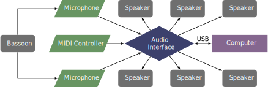

This piece was written in 2012 for Rebekah Heller and was premiered in 2013. The piece can be obtained by contacting the composer at his website. It is one of the few pieces for bassoon using Pure Data.
This piece uses six speakers that form a circle surrounding the audience, but it can also be performed with just two speakers. The bassoon can be captured with one, two, or three microphones. An audio interface with six outputs is required if six speakers are used. The patch can be controlled with the spacebar, if a separate electronics performer is used, or by sending MIDI note 60 to the patch.
A setup diagram for the piece is shown below. 
The electronics are written using Pure Data, and a screenshot of the patch is shown in the screenshots section. The patch operator first must turn on DSP processing in the Media menu, or the checkbox in the console window. The patch is then ready to begin as soon as the spacebar or MIDI controller is pressed.
This piece is very difficult from a technical standpoint. There are very fast passages, a wide variety of rhythmic tuples, and extreme registers. This piece is certainly out of range for undergraduate students. The electronics part always processes the bassoon's sound, so lining events up is not an issue in this piece. However, there are 112 cues in this piece, so the interaction with patch is very frequent. Overall, this piece is likely not a good first choice with electronics for prospective performers.
This piece leans more toward the avant-garde, but creates very interesting spatialization effects when six speakers are used. The novelty is likely to appeal to many in the audience, even if the musical content can be challenging for audiences less accustomed to avant-garde music.
©2025 by Benjamin Bradshaw
Logo ©2025 by Hannah Bradshaw